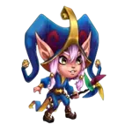

Khorus Pet Guide – Hero Wars: Dominion Era | Stats, Role & How to Use
- By: Alexandre Domingos. .
Khorus is a powerful support pet in Hero Wars: Dominion Era. With strong armor penetration and a high strength stat, this pet fights from the back line and boosts your team's potential with excellent support abilities.
This guide covers everything you need to know about Khorus from its role in battle to its maximum stats and strategic usage in your Hero Wars team compositions.

Who Is Khorus?
Khorus is a support pet that excels in countering control effects and enhancing heroes' defenses. Positioned in the back line, it empowers allies with tactical advantages during battle.
- Class: Support
- Position: Back line
- Main Stat: Strength
Maximum Stats:
Strength: 12,360
Armor Penetration: 47,911
Intelligence: 11,064
Khorus Skills Tips - Hero Wars: Dominion Era
Learn how to use Khorus's abilities effectively in battle to block control effects, protect your allies, and counter magic-heavy teams.
Khorus Active Skills
Flock’s Vengeance
This skill works like a revenge mechanic. Every 3 seconds, or when enemies use control effects like silence or stun, Khorus stores up magical energy called Runes. Each type of control gives a different number of Runes. When enough Runes are gathered, he unleashes them to attack the enemy who used the most control effects or the one with the lowest health if there's a tie. The more Runes he stores, the more damage he deals. It’s a perfect counter to teams that use lots of control.
Tips: Use Khorus against teams that rely on control (like Polaris or Lian). The more control effects your team receives, the faster Khorus deals damage.
The Indomitable
This is a passive skill that automatically helps your team avoid control effects. For example, if an enemy tries to silence or stun your hero, there’s a chance the effect will be blocked. Every time a block happens, Khorus gains Runes for his other skill, Flock’s Vengeance. It’s a defensive skill that builds offense over time.
Note: Notice in the image above — when Keira used her skill, it should have silenced all enemies, but Helios was protected by Khorus's "The Indomitable" ability.
Tips: This skill is always active. Pair Khorus with squishy mages or control-prone heroes to protect them and power up Flock’s Vengeance faster.
Khorus Patronage Skill

Resilience Aura
When Khorus is assigned as a patron to a hero, he gives that hero and nearby Intelligence-based allies a magic shield. This shield turns part of the magic damage they deal into protection against physical attacks. The more damage they deal and the lower their health, the stronger the shield becomes. This is excellent for protecting fragile mages who stand in the middle of your team.

Tips: Assign Khorus as a patron to mages like Lars, Orion, or Celeste to help them stay alive longer in battle. Works best in teams with multiple Intelligence heroes.
Khorus Pros and Cons - Hero Wars: Web and Facebook
✅ Pros
- Excellent counter to control-heavy enemy teams thanks to his ability to block control effects.
- Provides strong protection for magic-based teams through his Resilience Aura shield.
- Charges Runes passively and actively, allowing consistent damage to key enemy controllers.
- His passive skill helps allies resist crowd control and turn it into damage.
- Supports Intelligence-based heroes, making him perfect for mage team compositions.
⌠Cons
- Rune damage is only effective if enemies apply control effects — limited impact against pure damage teams.
- Resilience Aura only works for magic damage, which makes him less useful in physical-based teams.
- Runic Circle targeting depends on enemy control actions and lowest HP, which can feel inconsistent.
- Has no healing or energy generation utility, focusing only on control counter and shielding.
Khorus Synergy - Hero Wars: Dominion Era
Currently, Khorus is one of the most popular pets used across many top meta teams, both physical and magical. His ability to counter control effects makes him a key piece when building competitive teams. Khorus is especially effective when paired with heroes like Augustus, Orion, Nebula.
Khorus Patronage List Hero Wars
Khorus provides strong magical defense and survivability to mages. His patronage grants shields that absorb physical damage based on missing health and magic damage dealt.
Aidan

Celeste

Faceless

Helios

Judge

Kai

Krista

Lars

Lian

Lilith

Mojo


Peppy
Phobos

Polaris

Satori

Khorus Conclusion - Hero Wars: Dominion Era
Khorus is an incredibly valuable pet for teams that struggle against control-heavy opponents. His ability to passively block negative effects like silence, charm, stun, and blind greatly increases the survivability of your heroes. At the same time, his Runic Circle adds consistent damage over time, targeting the enemies that cause the most disruption.
In addition to his active battle utility, Khorus excels as a patron for Intelligence-based heroes. His Resilience Aura transforms magic damage into protective shields, giving mages like Orion, Krista, and Celeste an added layer of defense. This makes him a strong choice for mid-to-late game strategies focused on magical damage and sustain.
Whether you place him in battle or use his patronage skill, Khorus offers both offensive and defensive advantages. While he might not shine in fast-paced fights or against teams with little control, his value becomes undeniable in drawn-out encounters and control-heavy matchups. If you're building a team that relies on casters or needs protection from crowd control, Khorus is one of the best pets to invest in.
Explore new skills with our featured heroes!
 Biscuit Pet Guide for Hero Wars: Dominion Era
Biscuit Pet Guide for Hero Wars: Dominion Era Ultimate Pets Tier List Guide for Hero Wars: Dominion Era
Ultimate Pets Tier List Guide for Hero Wars: Dominion Era  in Hero Wars: Dominion Era") Best Totems Guide (How to Get Totems) in Hero Wars: Dominion Era
Best Totems Guide (How to Get Totems) in Hero Wars: Dominion Era Leave Your Opinion!
Did you like our Khorus Pet Guide for Hero Wars Web and Facebook?? Is there something you didn't understand or would like to suggest changes to? We invite you to join our comment section on the Alexandre Games Blog page. Feel free to express your opinion, clarify your doubts, and share your suggestions.
Click the button below to get started: